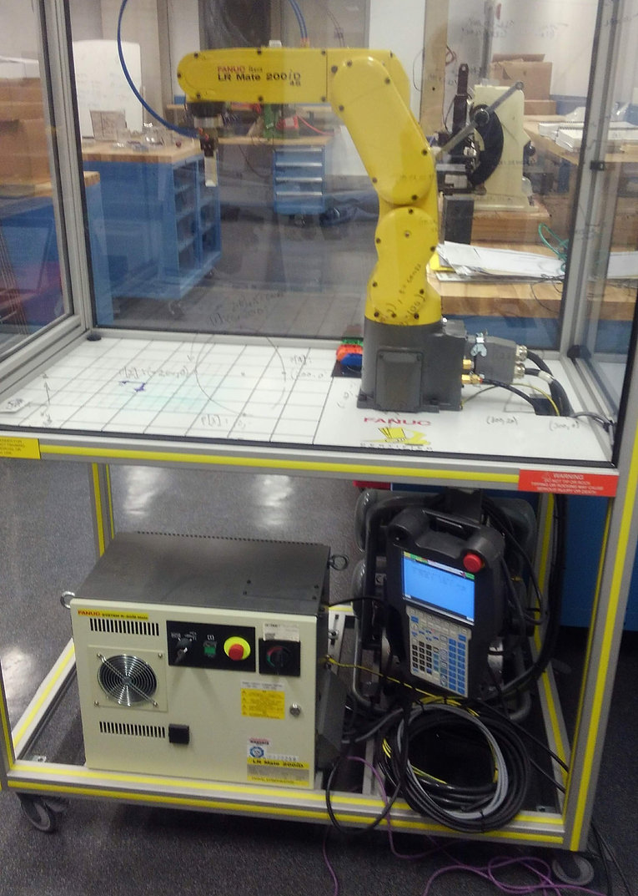

With another student, I developed curriculum to teach Mechanical Engineering students how to program and operate a FANUC industrial robot. The instruction included online presentations to introduce the information (made by me) followed by lab sessions where students could use the robot (conducted by my colleague). We used the Certified Education Robot Training (CERT) cart, seen on the right. The curriculum included safety, operating/programming with the teach pendant, and vision functionality.
-
FANUC LR Mate 200iD
(Winter 2019-Spring 2019)The CERT cart
-
Basic Programming
The first module (after Safety) was Basic Programming. In this lab, students learned how to create programs, record points, test programs, and edit motion between points (speed, path shape, etc.). The end goal was to make a program that traces a rectangle on the floor of the CERT cart.
Rectangle Demo
-
Advanced Programming
The next module was Advanced Programming. In this lab, students learned how to use position registers (globally defined positions the robot can assume in any program), activate the end effector, and define User (custom) Frames of reference. This time, the end goal was to trace the more complicated shape of our school logo.
Northwestern "N"
-
Vision
The final module was Vision. In this lab, students learned about the vision capabilities of the robot. Due to timing issues, students were not able to program the robot to use vision, but were able to watch the vision demo program I wrote. In it, the robot uses an overhead camera to determine the location of a lego brick on a "platform." It then assumes the correct position/rotation, picks up the brick, and drops it into a "receptacle."
Vision Demo
-
Motion Test
While learning to use the robot, I put together this motion test for Valentine's Day, which includes all three motion types (joint, linear, and circular).
Valentine's Day Program